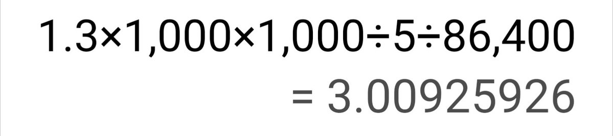

hsn今天吃什么
@hsn8086k
哦我们就按1.3算, 假设只肯出电费(快递费也只够电费了), 一般家宽上行理论也就50兆比特每秒, 假设一直能跑满不被网盘和运营商干, 大概需要3天整.
但是假如需要传更多数据呢, 卡车运硬盘从来不是一个笑话, 很可能确实是最便宜的办法.
解释: 图中的5来自: 50兆比特每秒去掉损耗大概是5兆字节每秒.

Hrome
@Hromezhao
@__fanqie__ 帮自己和对方开个网盘会员这么难么？而且一个月两个人也就60块吧，最高等级的会员。如果是啥机密资料那就另说了，要保证绝密那就只能刻录或者用硬盘了。